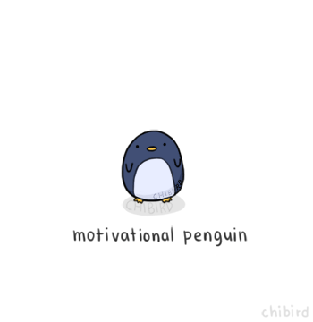
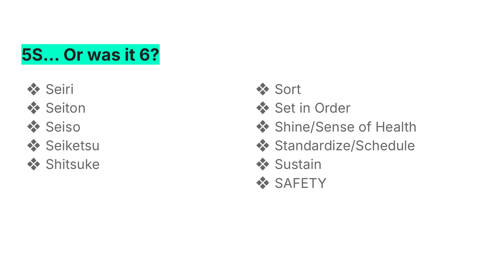
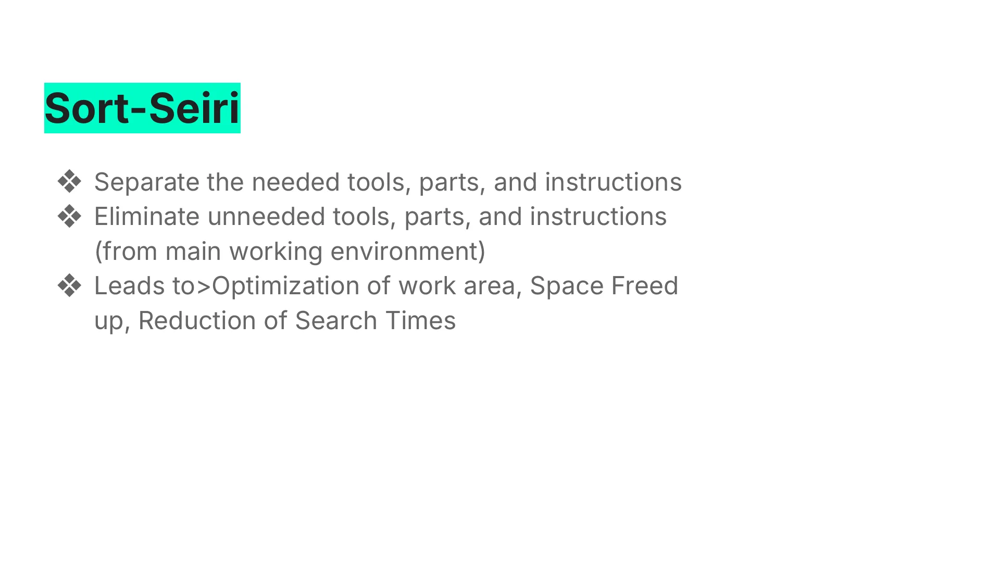
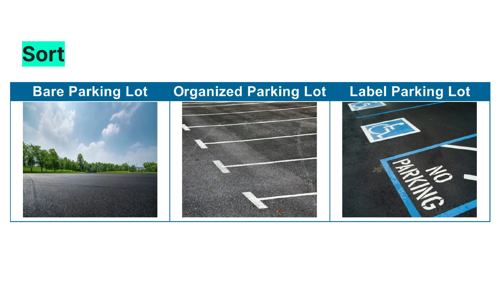
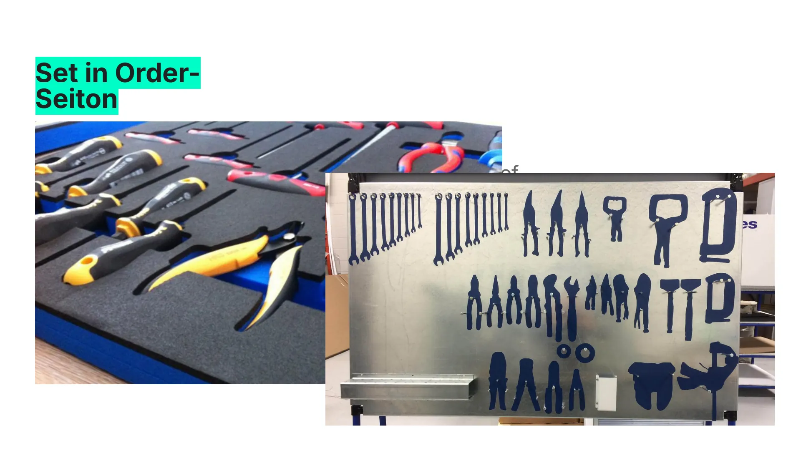
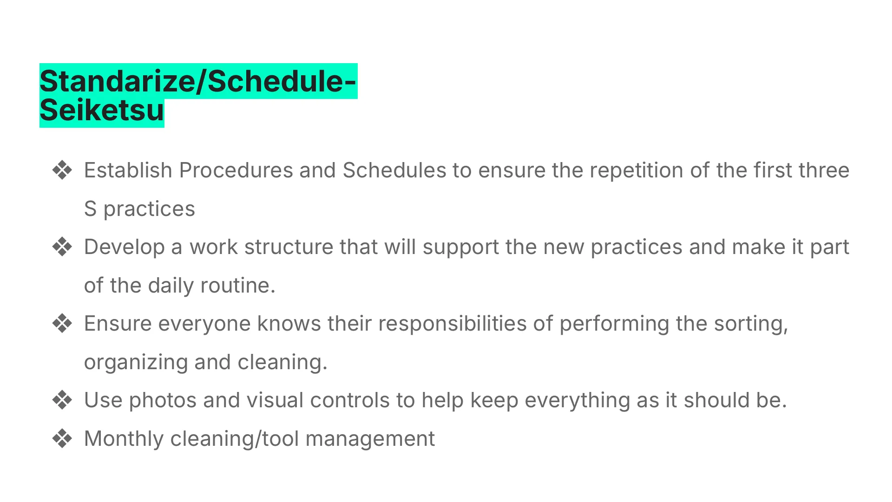
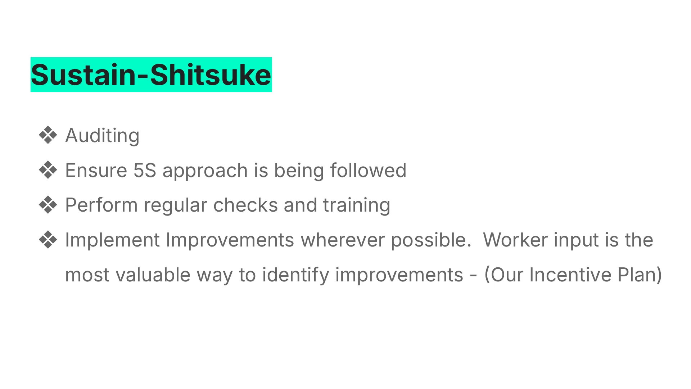
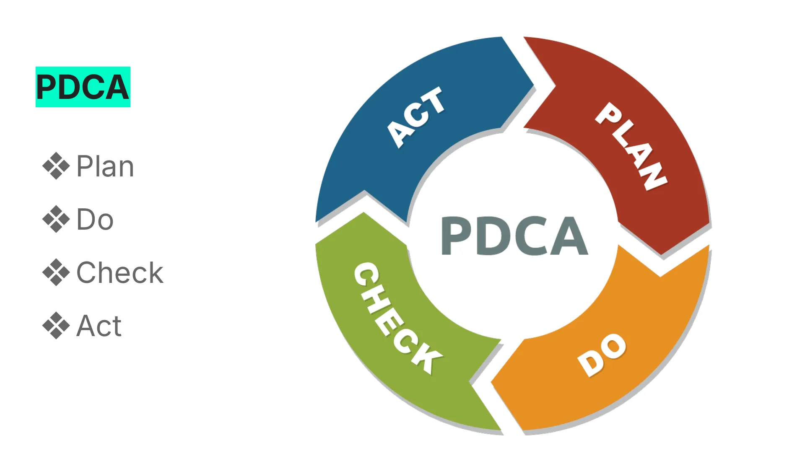
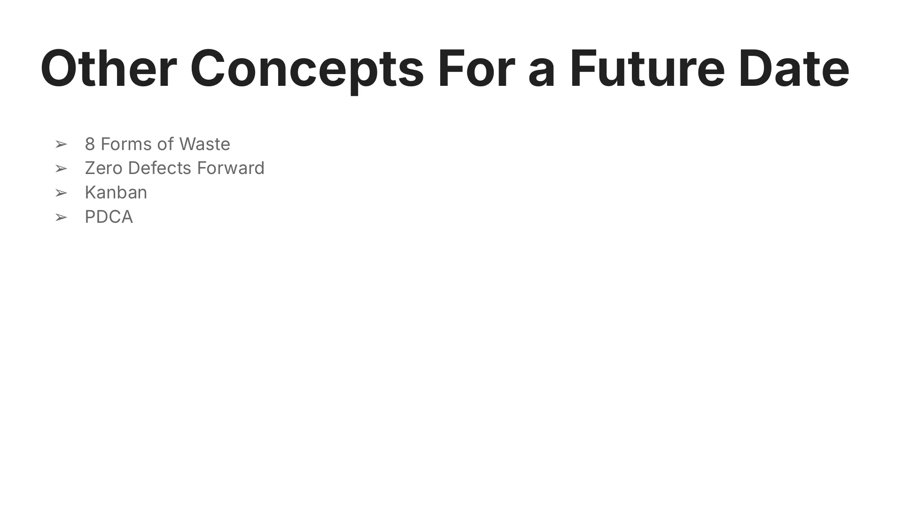

Slide 4Kaizen?
What is Kaizen? Besides a word that's fun to say.
Japanese Word
Continuous Improvement
What does this mean for you?
What does this mean for us?
Literally translated it means Change Good
Don’t get used to, or be satisfied by the status quo
Perfection isn’t possible, but we should strive for it everyday.
Better today than yesterday

Slide 5Penguin Break - Courtesy of Joel

Slide 65S… Or was it 6?
Seiri
Seiton
Seiso
Seiketsu
Shitsuke
Sort
Set in Order
Shine/Sense of Health
Standardize/Schedule
Sustain
SAFETY

Slide 7Sort-Seiri
Separate the needed tools, parts, and instructions
Eliminate unneeded tools, parts, and instructions (from main working environment)
Leads to>Optimization of work area, Space Freed up, Reduction of Search Times

Slide 8Sort

Slide 9Set in Order-Seiton
Further optimizes and reduces search times
Reduction in waste time and movement (two of the 8 forms of waste)
Honestly, aesthetically pleasing, looks professional, and gets your manager off your back.
Visual Management-KanbanSlide 10Shine-Seiso
Sense of Health/Hygiene
Reduction of Defects (FOD)
Accident Risk Reduction

Slide 11Standarize/Schedule-Seiketsu
Establish Procedures and Schedules to ensure the repetition of the first three S practices
Develop a work structure that will support the new practices and make it part of the daily routine.
Ensure everyone knows their responsibilities of performing the sorting, organizing and cleaning.
Use photos and visual controls to help keep everything as it should be.
Monthly cleaning/tool management

Slide 12Sustain-Shitsuke
Auditing
Ensure 5S approach is being followed
Perform regular checks and training
Implement Improvements wherever possible. Worker input is the most valuable way to identify improvements - (Our Incentive Plan)

Slide 13PDCA
Plan
Do
Check
Act

Slide 14Other Concepts For a Future Date
8 Forms of Waste
Zero Defects Forward
Kanban
PDCA